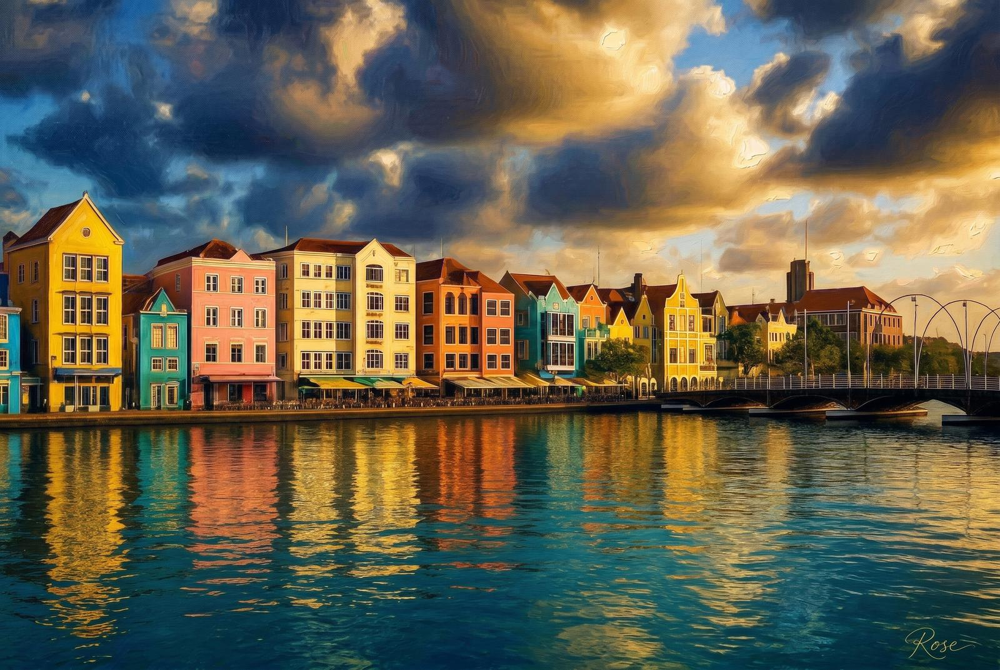
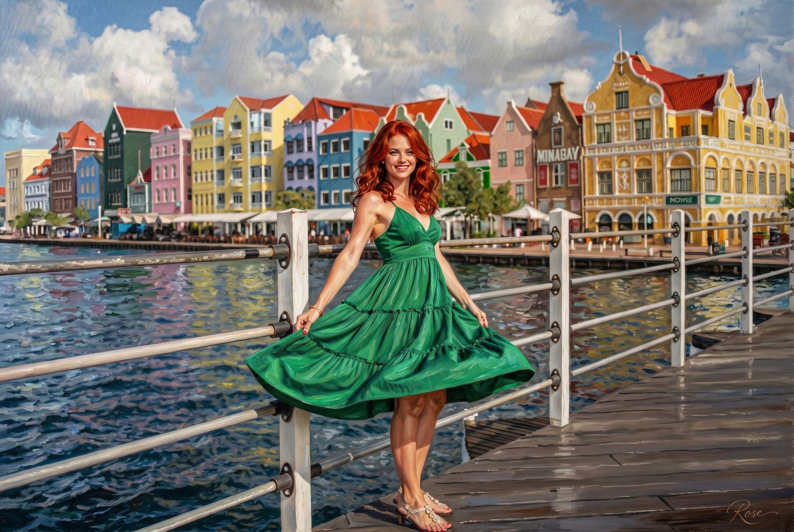
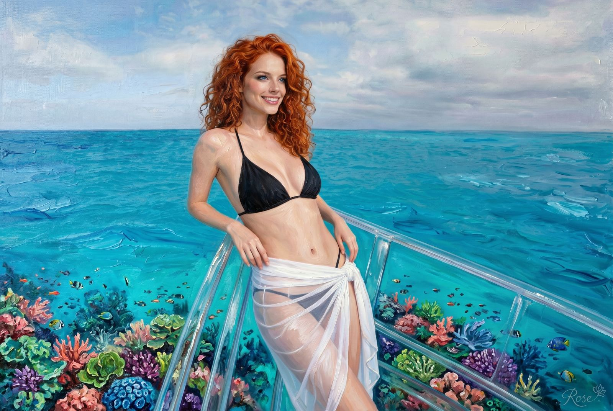
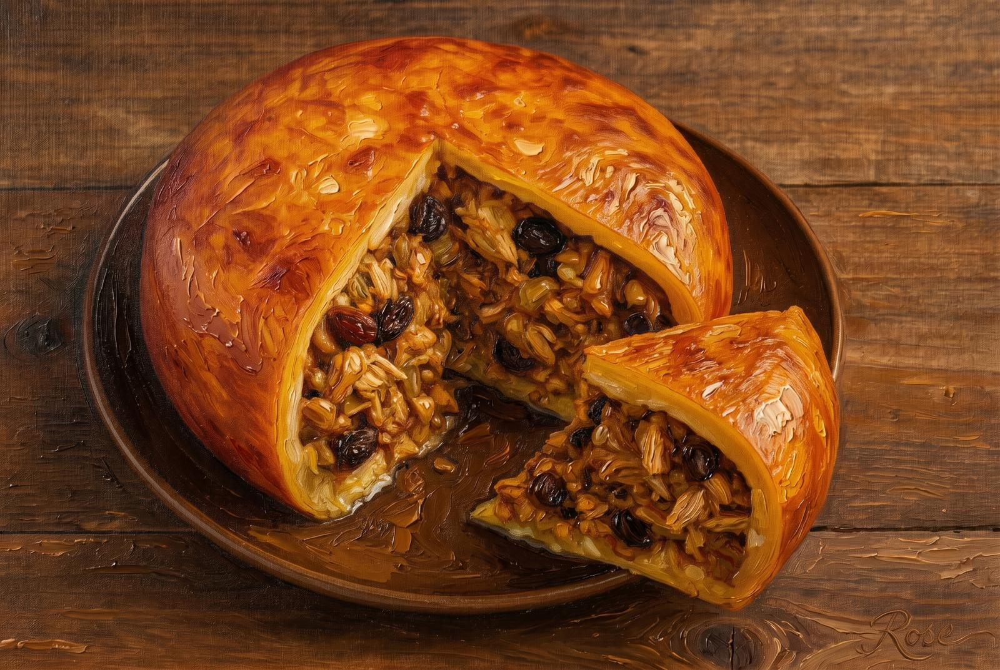
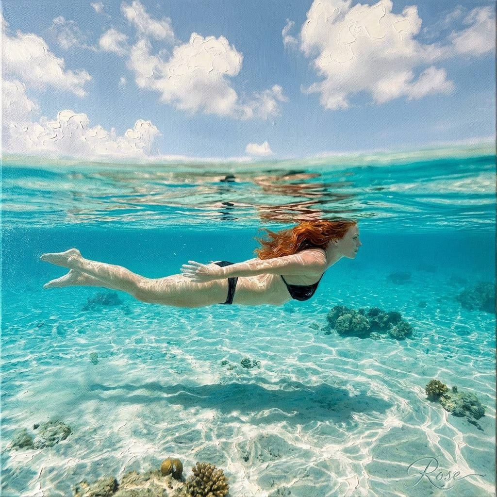
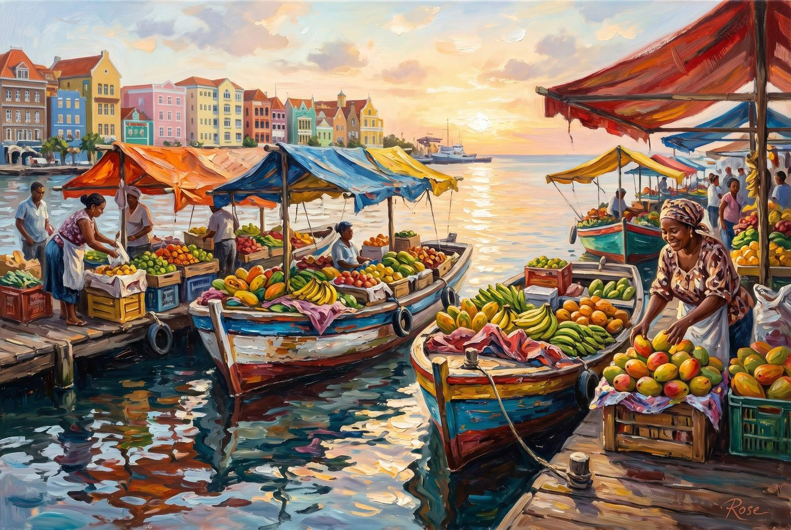
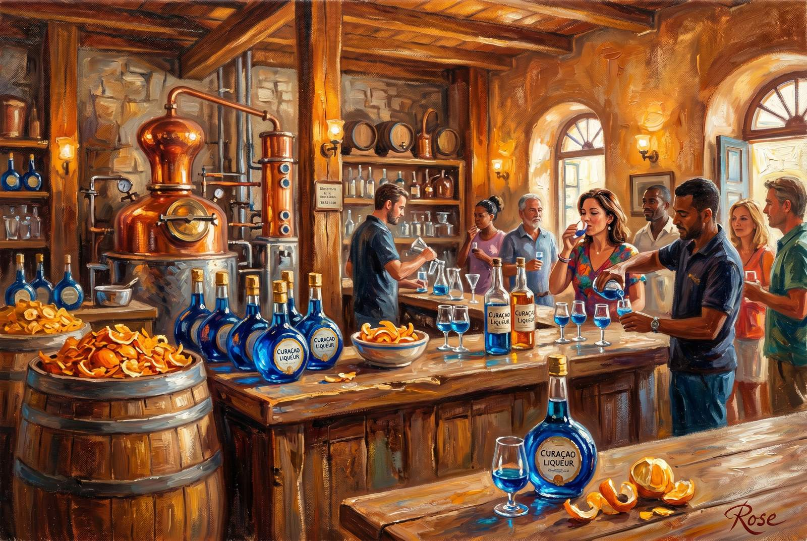
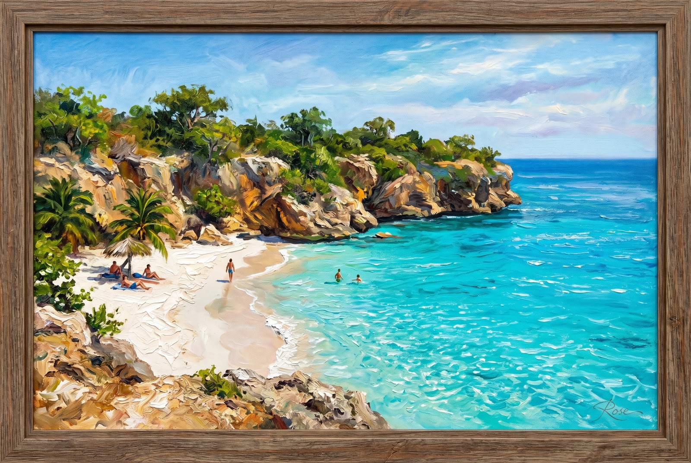
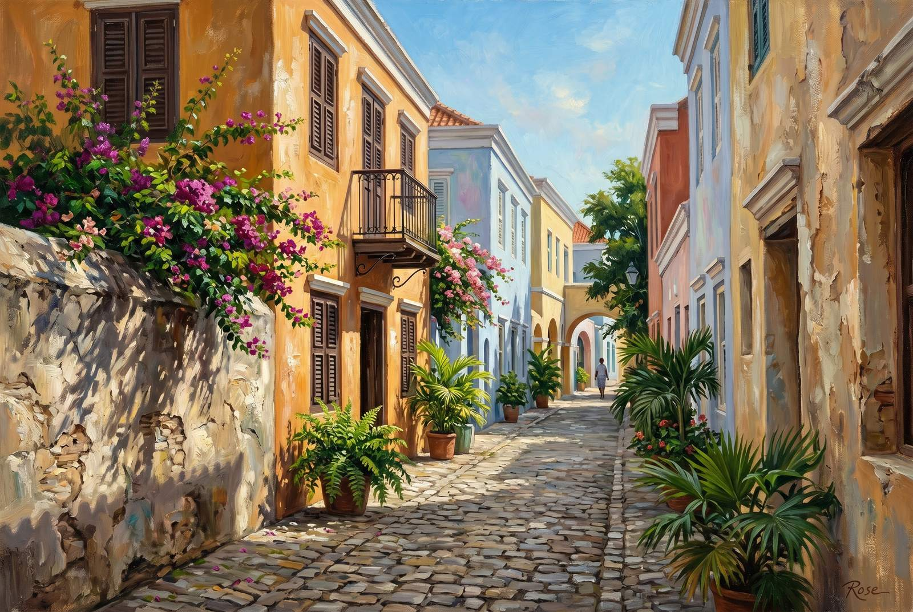
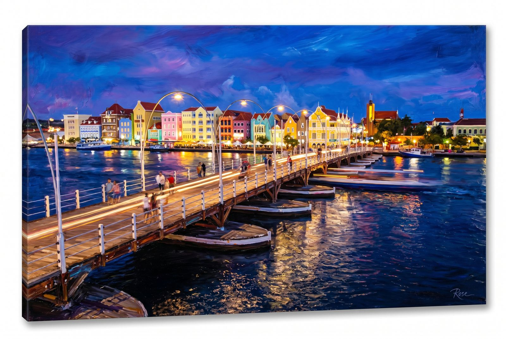

Studio File #004
Curaçao was always going to work in paint. The whole island behaves like somebody swapped out realism for a slightly more flattering version of itself: pastel waterfronts, harbor light, impossible blues, bitter oranges that turned into marketing, and beaches that feel offended by the concept of hurry.
This ten-piece set leans into the color without making it cheap. Caribbean brightness, yes. But still with shadows, still with brush weight, still with enough control to keep it from collapsing into souvenir art.
Click any painting to open the full-size original.

The obvious opener. Willemstad already looks painted before I touch it, so this one just gives the facades, water, and harbor light permission to become even more unreasonable about color.

This is the glamorous public-facing Curaçao piece: bridge, waterfront, dress, hair, all of it arranged like the island knew somebody was coming to interpret it dramatically later.

The clear boat scene wanted oil paint because ordinary photography can only do so much with water this smug. The point here is the hovering feeling: boat, reef, blue, all of it pretending physics is optional.

Every collection needs one painting that smells like the destination. This is that one. Warm cheese crust, rich sauce, Caribbean-Dutch excess, and the quiet dignity of a dish that knows restraint is for other islands.

Curaçao blue is rude to most screens, so here it gets the full painterly treatment instead: currents, light shafts, red hair, and the kind of tropical clarity that makes land feel like an administrative inconvenience.

This one belongs to the women who kept the market alive. Fruit piles, boats, harbor light, and the small economic miracle of a place that only makes sense if it stays on the water.

The distillery piece gets to be a little jewel-box ridiculous. Glass, citrus, amber wood, blue bottles — all the evidence that marketing sometimes accidentally creates a decent mythology.

Playa Kenepa needed to be in the set because the whole island's argument eventually collapses into water this clear. The paint here is mostly doing its best not to look smug about how easy Curaçao makes beauty feel.

Kura Hulanda gives the palette a little discipline. Ochre, shadow, stone, tropical hush. A reminder that Curaçao is not only loud color — it also knows how to do old-world quiet with very good light.

The set closes at twilight because Curaçao deserves one last glamorous lie. The lights come on, the reflections stretch out, and the city starts pretending it was never trying at all.